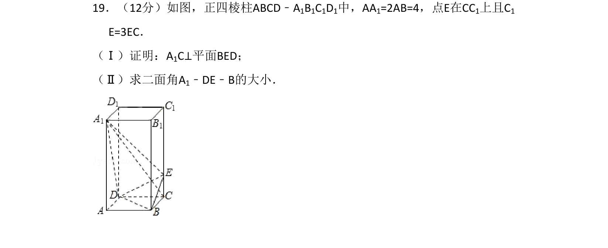
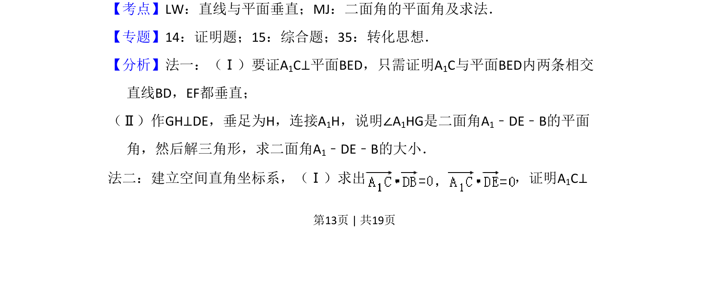
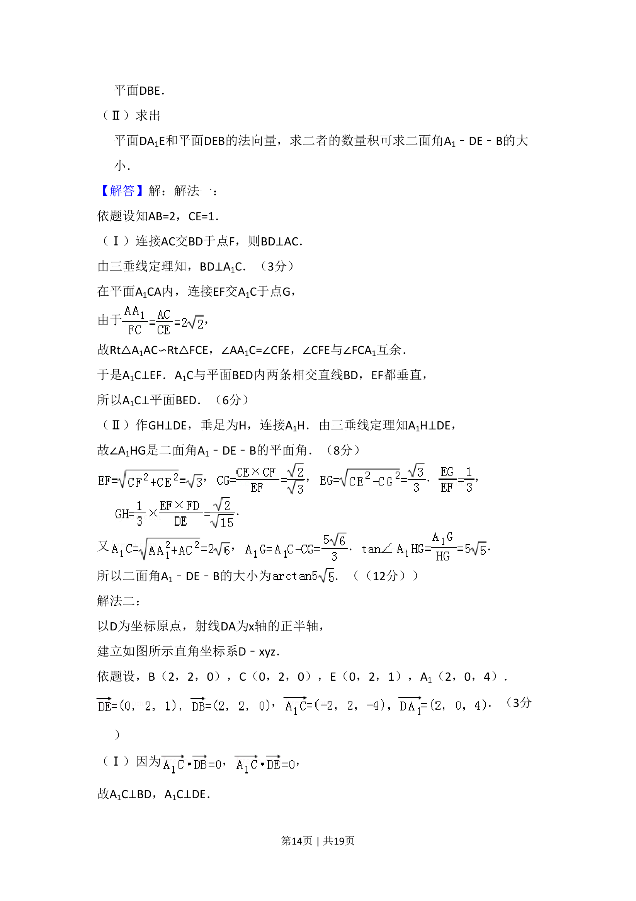
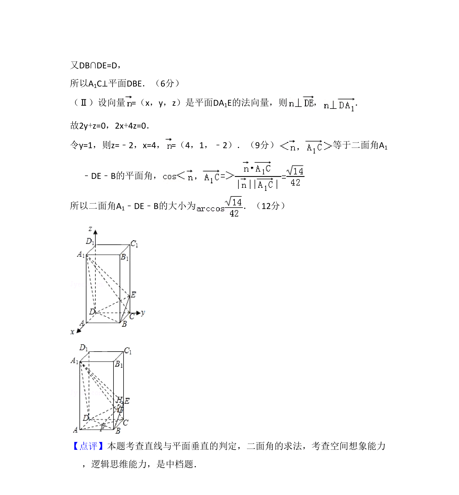

考点：直线与平面垂直 二面角的平面角及求法

正四棱柱中证明线面垂直并求二面角大小，可用几何法或空间向量法。



📄 原 PDF 第 13 页：
素材/真题/吉林/2008-2024·（吉林）数学高考真题/2008年高考数学试卷（理）（全国卷Ⅱ）（解析卷）.pdf
19．（12分）如图，正四棱柱ABCD﹣A1B1C1D1中，AA1=2AB=4，点E在CC1上且C1 E=3EC． （Ⅰ）证明：A1C⊥平面BED； （Ⅱ）求二面角A1﹣DE﹣B的大小．
【考点】LW：直线与平面垂直；MJ：二面角的平面角及求法．菁优网版权所有 【专题】14：证明题；15：综合题；35：转化思想． 【分析】法一：（Ⅰ）要证A1C⊥平面BED，只需证明A1C与平面BED内两条相交 直线BD，EF都垂直； （Ⅱ）作GH⊥DE，垂足为H，连接A1H，说明∠A1HG是二面角A1﹣DE﹣B的平面 角，然后解三角形，求二面角A1﹣DE﹣B的大小． 法二：建立空间直角坐标系，（Ⅰ）求出 ，证明A 1C⊥